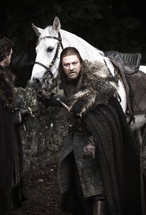
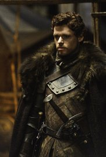
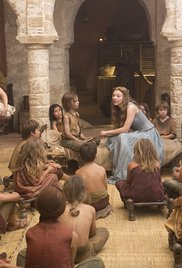
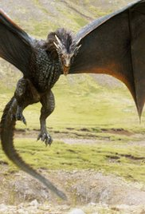
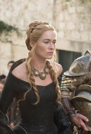
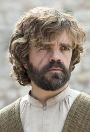
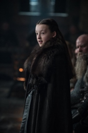
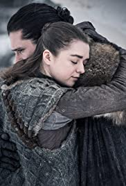

| Évad száma | Első rész megjelenése | Utolsó rész megjelenése | Novellák feldolgozva | |
|---|---|---|---|---|
| 1 | 2011 április 17. | 2011 június 19. | A Game of Thrones |  |
| 2 | 2012 április 1. | 2012 június 3. | A Clash of Kings, A Storm of Swords |  |
| 3 | 2013 március 31. | 2013 június 9. | A Storm of Swords |  |
| 4 | 2014 április 6. | 2014 június 15. | A Storm of Swords, A Feast for Crows, A Dance with Dragons |  |
| 5 | 2015 április 12. | 2015 június 14. | A Feast for Crows, A Dance with Dragons, A Storm of Swords, The Winds of Winter |  |
| 6 | 2016 április 24. | 2016 június 26. | The Winds of Winter, A Feast for Crows, A Dance with Dragons |  |
| 7 | 2017 július 17. | 2017 augusztus 28. | The Winds of Winter, A Dream of Spring |  |
| 8 | 2019 április 14. | 2019 május 19. | The Winds of Winter, A Dream of Spring |  |
További információk az alábbi oldalakon: